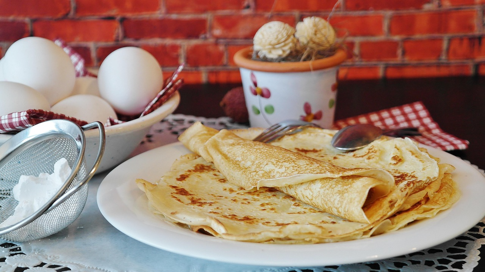

Receita do Dia: Panqueca Americana Clássica
Por: Chef Dev
Uma receita simples, rápida e deliciosa para começar o dia com energia. Rende 5 porções e fica pronta em 15 minutos.
Ingredientes:
- 1 xícara de farinha de trigo
- 2 colheres de sopa de açúcar
- 2 colheres de chá de fermento em pó
- 1/2 colher de chá de sal
- 1 xícara de leite
- 1 ovo
- 2 colheres de sopa de manteiga derretida
Modo de Preparo:
- Em uma tigela, misture os ingredientes secos (farinha, açúcar, fermento e sal).
- Em outro recipiente, bata o ovo, o leite e a manteiga derretida.
- Junte as duas misturas e mexa até ficar homogêneo (não bata demais).
- Aqueça uma frigideira antiaderente em fogo médio e coloque uma concha de massa.
- Vire quando dourar e surgirem bolhas na superfície.
Dica do Chef: Sirva com mel, geleia ou frutas frescas!